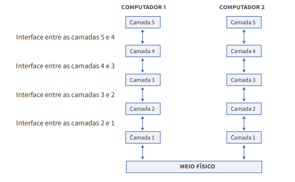

modelo de organização em camadas
- O desenvolvimento de uma arquitetura de redes de computadores consiste em
uma tarefa complexa
- A ideia do modelo de camadas consiste em dividir o projeto de redes em funções independentes e
agrupá-las em
camadas. Dessa forma, cada nível é responsável por determinados serviços e apenas aquela camada
pode
oferecê-los. Além disso, o implementa regras para a comunicação entre as camadas, isolando suas
funções e garantido a
independência entre elas.
- O modelo de camadas surgiu para reduzir a complexidade
do projeto de arquitetura de redes
- A ideia do modelo de camadas consiste em dividir o projeto de redes em funções independentes e agrupá-las em
camadas.
-
podemos afirmar que uma camada se
comporta como uma caixa-preta, pois as camadas que interagem com ela devem
conhecer apenas suas entradas e saídas, sem a necessidade de conhecer como o
processo interno se desenvolve.
Esse isolamento entre as camadas ocorre devido ao conceito de encapsulamento. O conceito de PDU (Protocol
Data Unit), ou unidades de dados de protocolo,
desempenha uma função importante neste conceito.
-
O modelo de camadas também oferece benefícios comerciais.
diferentes empresas podem oferecer soluções para uma ou mais camadas,
permitindo aos usuários adquirir produtos de diferentes fabricantes sem o risco de
incompatibilidades entres os diferentes dispositivos, o mercado se
torna mais competitivo, tendendo a reduzir o custo dos produtos para os usuários
- , pode haver duas perspectivas de comunicação, vertical e horizontal
-
Na perspectiva de comunicação vertical, cada camada se
comunica apenas com as camadas adjacentes, proporcionando um entendimento
da comunicação entre as camadas dentro de um mesmo dispositivo. serviços são oferecidos através de
interfaces que permitem a
comunicação entre as camadas adjacentes
-
essas perspectivas podem ser usadas para explicar o funcionamento de serviços de rede ou
protocolos.

-
A perspectiva de comunicação horizontal permite criar a abstração de que as camadas se comunicam diretamente
não tem meio fisico
-
Uma camada pode ter um ou mais protocolos associados. Um determinado protocolo é formado pelas informações
de controle contidas no cabeçalho e pelo processamento dessas informações nas respectivas camadas de origem
e destino. É
importante não confundir os conceitos de serviço e protocolo. Um serviço define o
que deve ser feito pela camada, ou seja, as interfaces e parâmetros que permitem
a comunicação vertical entre as camadas adjacentes. O protocolo define como o
serviço é implementado, ou seja, as informações de controle e processamento realizado pelas camadas no mesmo
nível horizontal. O conjunto de protocolos implementados por todas as camadas do modelo é conhecido como
pilha de protocolos.
-
o. Nesse caso, podemos perceber que
a comunicação se dá por meio dos protocolos seguidos pelas camadas. Veja que
essa perspectiva não objetiva demonstrar como de fato a informação foi transmitida, mas a forma como cada
camada percebe a comunicação.